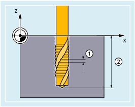

Beim Gewindebohren mit Ausgleichsfutter (G63) wird die Spindel nicht mit der Linearachse interpoliert, sondern drehzahlgeregelt betrieben. Der von der Spindeldrehzahl und der Gewindesteigung abhängige Vorschub der Linearachse muss berechnet und explizit programmiert werden. Da Spindel und Linearachse nicht gemeinsam interpoliert werden, wird zum Ausgleich von z. B. Drehzahlschwankungen der Spindel, ein Gewindebohrer in einem Längenausgleichsfutter benötigt.
① | Gewindesteigung |
② | Gewindetiefe |
Gewindebohren
| G63 X.../Y.../Z... M3/M4 S... F... | ; Gewindebohren |
| G63 X.../Y.../Z... M4/M3 | ; Rückzugsbewegung |
| Mit G63 wird sowohl das Gewindebohren in Bohrrichtung bis zum Gewindeendpunkt als auch die Rückzugsbewegung (mit umgekehrter Spindeldrehrichtung!) programmiert. | ||
Wirksamkeit: | satzweise | ||
| Bohrtiefe / Endpunkt der Rückzugsbewegung Verfahrweg/-position der Geometrieachse (X, Y oder Z) zum Gewindeendpunkt bzw. zum Endpunkt der Rückzugsbewegung. | ||
| Spindeldrehrichtung | ||
M3 | Drehrichtung im Uhrzeigersinn (Rechtsgewinde) | ||
M4 | Drehrichtung gegen den Uhrzeigersinn (Linksgewinde) | ||
Die Rückzugsbewegung muss mit umgekehrter Spindeldrehrichtung programmiert werden. | |||
| Maximal zulässige Spindeldrehzahl während des Gewindebohrens | ||
| Vorschub der Bohrachse Der zu programmierende Vorschub ergibt sich aus dem Produkt von Spindeldrehzahl und der Gewindesteigung des Gewindebohrers: F = Spindeldrehzahl * Gewindesteigung | ||
| Hinweis |
Nach einem G63 -Satz wird wieder die zuletzt wirksame Interpolationsart G0, G1, G2 aktiv. |
| Hinweis |
Achs- und Spindel-OverrideWährend die Funktion "Gewindebohren mit Ausgleichsfutter" aktiv ist, wirkt für den Achs- und Spindel-Override ein Wert von 100 %. |
Bohren eines M5-Gewindes:
Gewindesteigung nach Norm: 0,8 mm/U
Spindeldrehzahl S: 200 U/min
Vorschub F = 200 U/min * 0,8 mm/U = 160 mm/min.
| Programmcode | Kommentar |
|---|---|
| N10 G1 X0 Y0 Z2 F1000 S200 M3 | ; Startpunkt anfahren; Spindel im Uhrzeigersinn, 200 U/min |
| N20 G63 Z-50 F160 | ; Gewindebohren mit Ausgleichsfutter; Bohrtiefe: absolut Z=50mm; Vorschub: 160 mm/min |
| N30 G63 Z3 M4 | ; Rückzugsbewegung: absolut Z=3mm; Drehrichtungsumkehr; Spindel gegen den Uhrzeigersinn, 200 U/min |